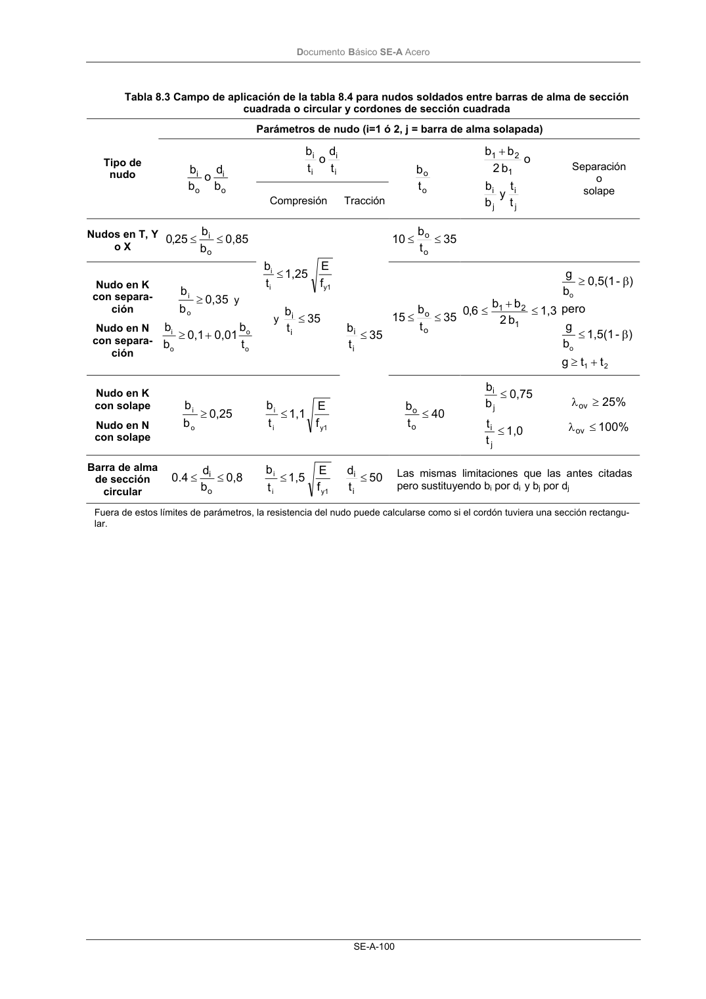
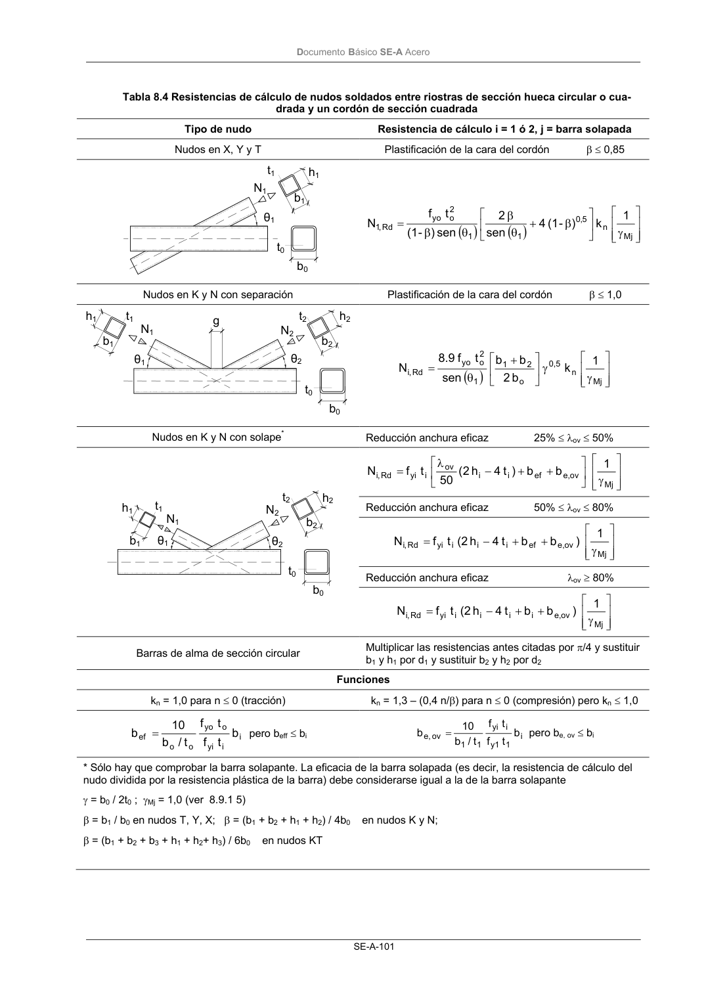

DB-SE-A Acero · edición 2007-10-23 · capa oficial
Documento DB-SE-A-oficial · SHA-256 del PDF 9ed9ea694aabfbda3bfbbef40dfe9223fde05d13c35bc2ba9751e5a96a22a64f
Copia fiel del PDF fuente · Fuente oficial
Ficha de la disposición en la fuente oficial
Formatos: JSON del segmento · Markdown
8.9.5.2 Secciones rectangulares 1 Las resistencias de cálculo de los nudos entre secciones huecas rectangulares y de los nudos en- tre secciones huecas cuadradas fuera del campo de validez de la tabla 8.3 deben basarse en los criterios siguientes: a) fallo por plastificación de la superficie o de la sección transversal del cordón; b) inicio de una fisura que conduzca a la rotura de las barras (punzonamiento por esfuerzo cor- tante); c) fisuración en las soldaduras o en las barras de alma (reducción de la anchura eficaz); d) hundimiento o pandeo local de las paredes laterales del cordón bajo la barra de alma solicita- da a compresión; e) pandeo local en las zonas solicitadas a compresión de las barras; f) fallo por esfuerzo cortante del cordón; La figura 8.25 ilustra los modos de fallo. DocumentoBásico SE-A Acero SE-A-100 Tabla 8.3 Campo de aplicación de la tabla 8.4 para nudos soldados entre barras de alma de sección cuadrada o circular y cordones de sección cuadrada Parámetros de nudo (i=1 ó 2, j = barra de alma solapada) i i i i t d o t b Tipo de nudo o i o i b d o b b Compresión Tracción t b o o j i j i 1 2 1 t t y b b o b 2 b b+ Separación o solape Nudos en T, Y o X 0,85 b b 25 ,0 o i≤ ≤ 35 t b 10 o o≤ ≤ Nudo en K con separa- ción Nudo en N con separa- ción 0,35 b b o i≥ y o o o i t b 0,01 0,1 b b + ≥ y1 i i f E 1,25 t b≤ y 35 t b i i≤ 35 t b 15 o o≤ ≤ 1,3 b 2 b b 6,0 1 2 1 ≤ + ≤ 2 1 o o t t g ) - 1,5(1 b g pero ) - 0,5(1 b g + ≥ β ≤ β ≥ Nudo en K con solape Nudo en N con solape 0,25 b b o i≥ y1 i i f E 1,1 t b≤ 35 t b i i≤ 40 t b o o≤ 1,0 t t 0,75 b b j i j i ≤ ≤ % 25 ov≥ λ % 100 ov≤ λ Barra de alma de sección circular 0,8 b d 4 . 0 o i≤ ≤ y1 i i f E 1,5 t b≤ 50 t d i i≤ Las mismas limitaciones que las antes citadas pero sustituyendo bi por di y bj por dj Fuera de estos límites de parámetros, la resistencia del nudo puede calcularse como si el cordón tuviera una sección rectangu- lar. DocumentoBásico SE-A Acero SE-A-101 Tabla 8.4 Resistencias de cálculo de nudos soldados entre riostras de sección hueca circular o cua- drada y un cordón de sección cuadrada Tipo de nudo Resistencia de cálculo i = 1 ó 2, j = barra solapada Nudos en X, Y y T Plastificación de la cara del cordón β≤ 0,85

